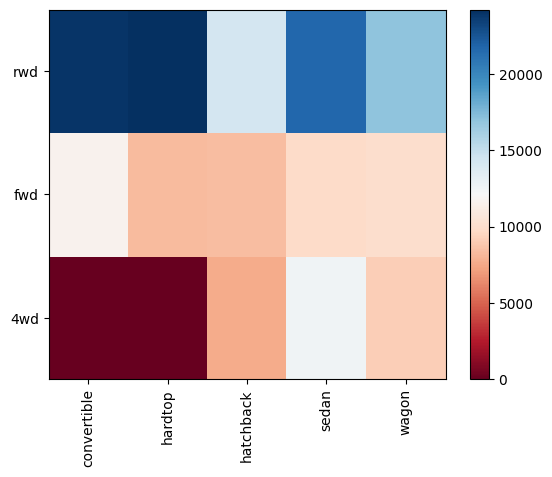
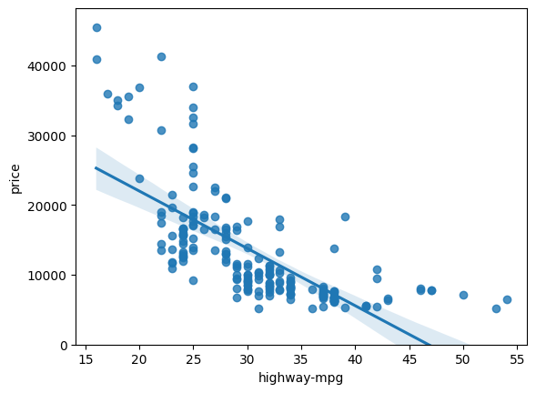
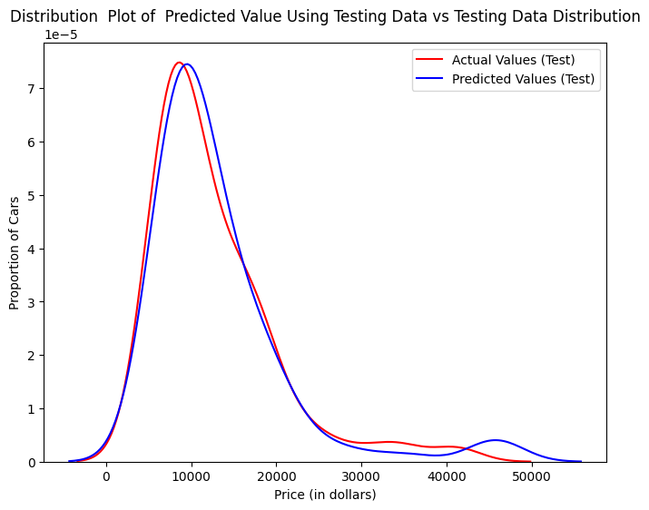

1. Context and Problem Definition
Can we estimate the price of a used car based on its features?
Let's say we want to sell a used car, but we want to set a reasonable price so that someone will want to buy it. To do this, we need to ask ourselves which features affect the selling price: the color? The make? The mileage?
2. Data and Its Preparation
The data was obtained from the "Applied Data Science with Python" certification course offered by IBM.
The first challenge in cleaning the dataset was that it did not include headers, so it was necessary to add them using code.
The next step was to replace the “?” symbol with the value NaN to identify missing data. The treatment applied to null values was to replace them with their mean or frequency. Only when the car price was missing the entire row was removed.
Additionally, some data types were corrected, columns expressed in miles per hour were standardized, measurement columns were normalized, and dummy variables were created for fuel type and induction.
import pandas as pd
import numpy as np
# Dealing with messy data
df.replace("?", np.nan, inplace = True)
avg_norm_loss = df["normalized-losses"].astype("float").mean(axis=0)
df["normalized-losses"] = df["normalized-losses"].fillna(avg_norm_loss)
# Correct data types
df[["bore", "stroke"]] = df[["bore", "stroke"]].astype("float")
df[["normalized-losses"]] = df[["normalized-losses"]].astype("int")
# Adding dummy variables
dummy_variable_1 = pd.get_dummies(df["fuel-type"])
dummy_variable_1.rename(columns={'gas':'fuel-type-gas', 'diesel':'fuel-type-diesel'}, inplace=True)
df = pd.concat([df, dummy_variable_1], axis=1)
3. Exploratory Data Analysis (EDA)
During this stage of the analysis, the following findings were made.
- First, the average price for a used car is $13,000, and the price range is between $5,000 and $45,000.
- Second, hardtop cars with rear-wheel drive sell for a higher price, approximately $24,000. Meanwhile, hatchback cars with all-wheel drive sell for a very low price, approximately $7,600.
- Third, there is a strong correlation between cylinder bore and the total horsepower a car can produce.
Finally, by calculating Pearson's correlation coefficient and the p-value, it was determined that there is a strong positive correlation between a car's price and its total horsepower, its dimensions, its curb weight, and its engine size. On the other hand, there is a strong negative correlation between price and highway fuel economy (highway mpg).


4. Solution Development
Given the simplicity of the dataset, basic machine learning models were used for this project. The following algorithms were tested: simple linear regression (SLR), multiple linear regression (MLR), and polynomial fitting (polyfit).
Based on the findings from the EDA, I chose to use the variables horsepower, curb weight, engine size, and highway mpg to predict a car's final price.
5. Results and Impact
After evaluating each model, it was determined that the MLR model offered the best performance, with 80% accuracy.
The next step was to train the model so that the predictions would more closely match the actual values in the dataset.

The estimated value is higher than the actual value for cars priced around $10,000; conversely, the estimated price is lower than the actual cost in the $30,000 to $40,000 range. Therefore, the model is not as accurate in these ranges.